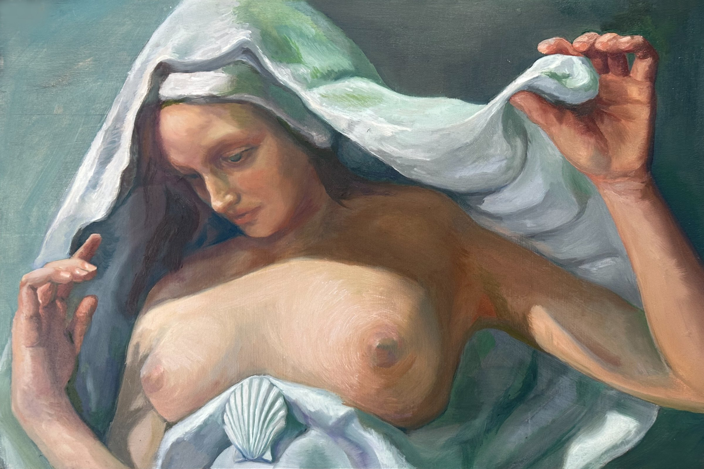
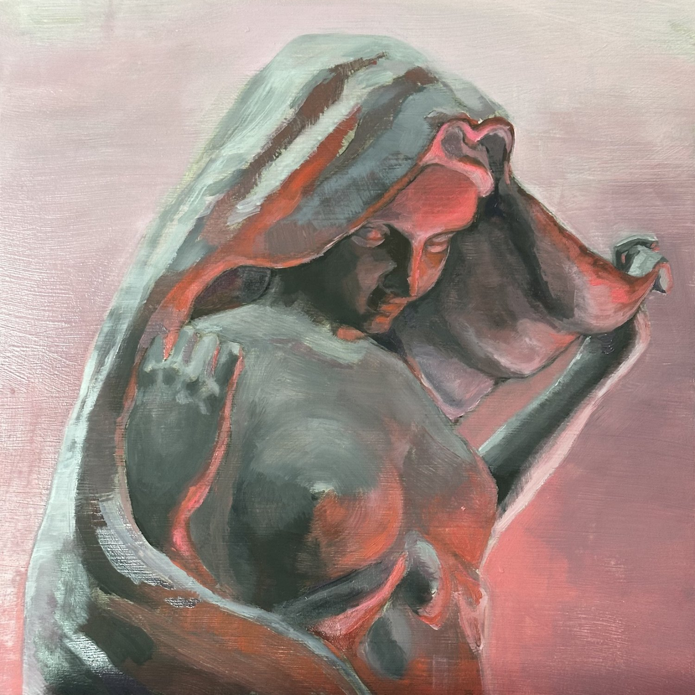
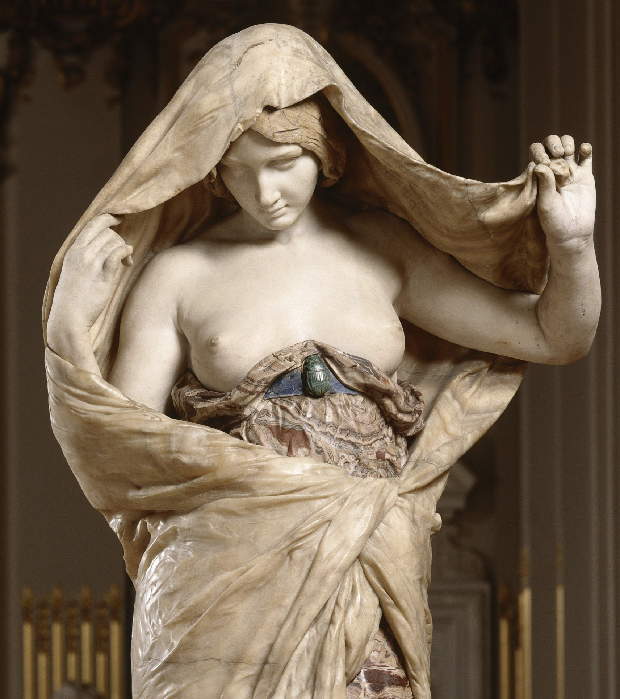
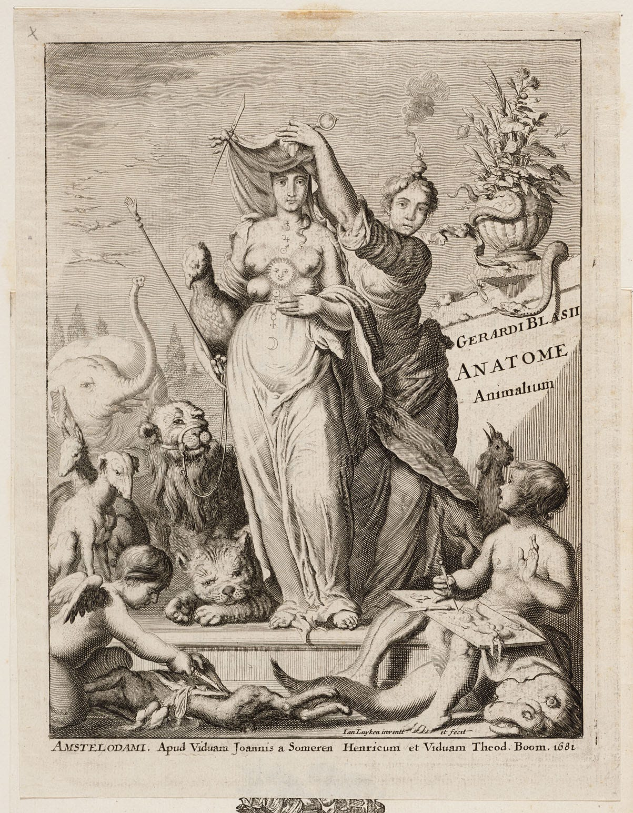
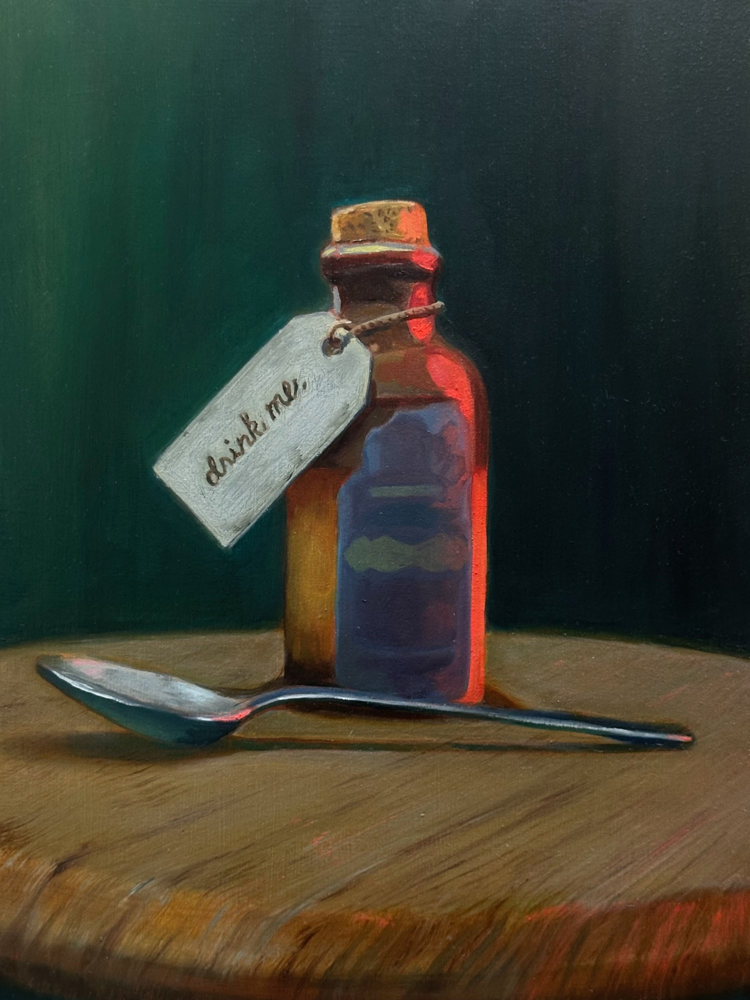

Unveiling Nature
Mother Nature has a grand orchestrated ecosystem of how things work, which we fail to distinguish between what is merely complicated and what is complex.


Unveiling Nature
Mother Nature has a grand orchestrated ecosystem of how things work, which we fail to distinguish between what is merely complicated and what is complex.


Study in neon pink
These are my paintings of “Nature Unveiling herself before Science,” which is a famous sculpture by Louis-Ernest Barrias. Most people know the famous copy in the Musée d’Orsay. (Fig. 1)

There’s something about this sculpture that really draws me in. The female figure has long been associated with mother nature across cultures, languages, and history. This sculpture opposed the Veil of Isis (Fig. 2), a symbol representing nature’s inaccessible secrets. Isis remained unknowable, whereas Barrias showed Nature unveiling herself. This shift reflected overall changes to people’s beliefs: the late 19th century believed nature held no more mysteries to protect, only mechanisms to dissect. It opened up the possibility to manipulate the true nature. (Fig. 3)

Today, technology advances and we call it progress, but it might not be that straightforward. There’s still a lot of mystery. Science is evolving and questioning, nothing is certain. Yet Science has become a label that gets attached to a finished product and never look back. We’ve forgotten that Mother Nature has a grand orchestrated ecosystem of how things work, which we fail to distinguish between what is merely complicated and what is complex. Our impatience drives us to oversimplify and rush to an outcome, when nature may have prepared us to self-correct and realign anyway. But we’re too impatient to find out. Time is the only testament of science. Did it work? Well, consequences are the price we pay with the lack of patience.

The Impatient’s Cure
Back to the gallery